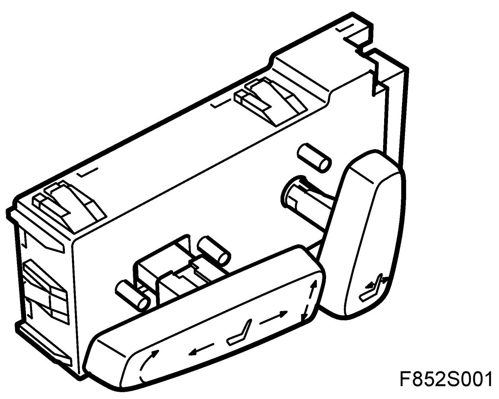
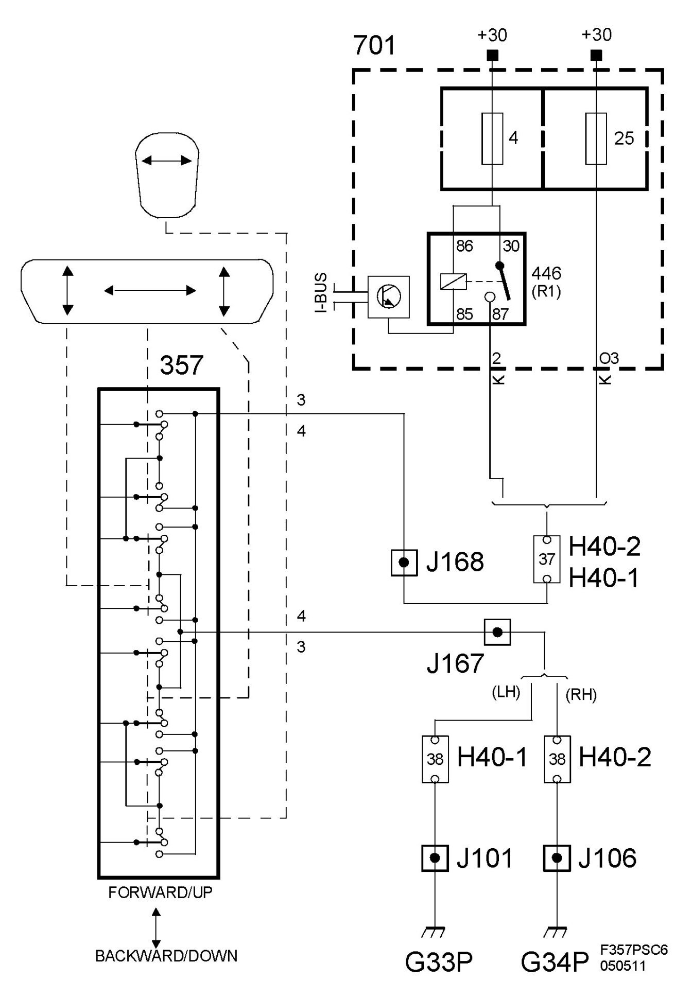

CV
Switch, Electrically Adjustable Seat (357), CV
Location
Switch, electrically adjustable seat (357).

Main task
To enable operation of the seat motors that move the seat lengthways, change the seat height and angle plus backrest reclining angle.
Type
The switch unit comprises a number of switches.
Connecting the seat
The switch unit is powered either via relay 446 with +30 from fuse 4 in the rear electrical centre (REC) or via fuse 25 in REC. The respective motors are grounded through the switch in grounding point G33P for the right-hand seat and G34P for the left-hand seat.
The passenger seat is always powered via relay 446.
If the passenger seat is manually operated, the driver's seat will be powered via relay 446.
If the passenger seat is controlled electronically, the driver's seat will be powered via fuse 25.
When the ignition is ON (+15 and +54) power is permanently supplied to the switch in the passenger seat by grounding relay (446) via pin 85 of and in the REC. When a switch closes, its respective motor will receive power and run to the desired position as long as the switch is depressed.
The power to the length adjustment motor 357a goes via relay unit 357r.
The switch is connected to the following motors:
- via relay unit (357r) electric motor (357a) changes the longitudinal position of the seat
- electric motor (357b) changes the angle of the seat
- electric motor (357c) raises and lowers the seat
- electric motor (357d) changes the reclining angle of the backrest
Diagram
